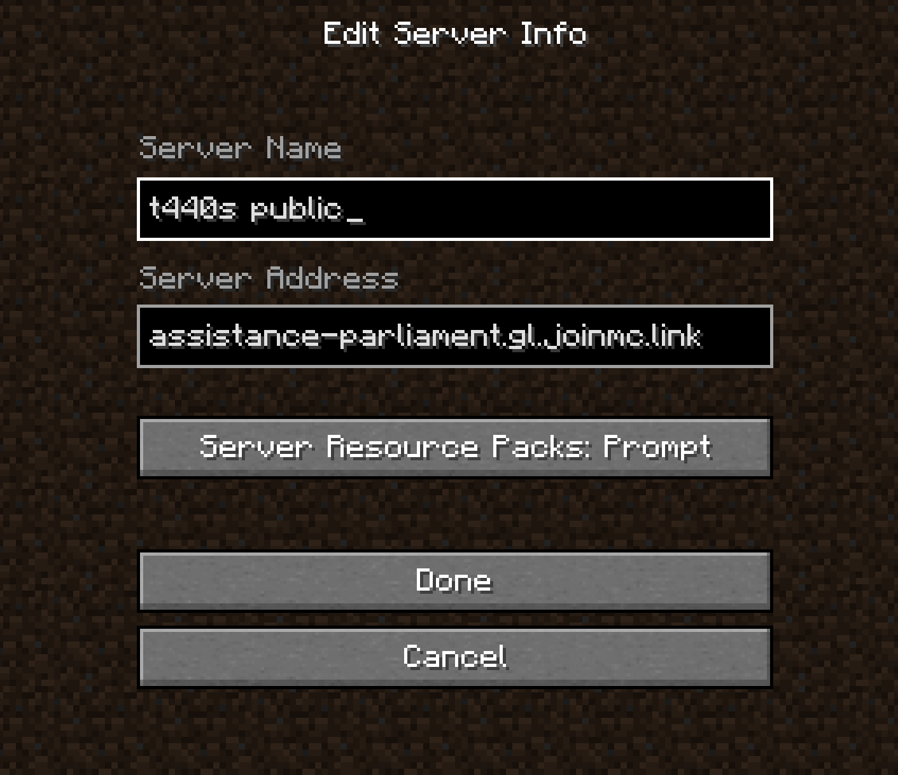

<!DOCTYPE html>
<html lang="en">
<head>
    <meta charset="UTF-8">
    <!--<meta name="viewport" content="width=device-width, initial-scale=1.0">-->
    <title>Lainpilled</title>
    <link rel="shortcut icon" type="image/png" href="img/transparentlain.png">
    
    <style>
        /* Add any additional CSS styles here */
        body {
            font-family: 'IBM Plex Mono', monospace;
            margin: 0;
            padding: 0;
            color: rgb(73,0,145)
        
        }
        header {
            background-image: url(https://media.tenor.com/v-d5E2Xnv_sAAAAd/lain-serial-experiments-lain.gif);
            color: white;
            padding: 10px;
            text-align: center;
        }
        nav {
            background-color: #072733ff;
            padding: 10px;
            text-align: center;
        }
        nav a {
            color: #fff;
            text-decoration: none;
            padding: 5px 10px;
        }
        nav a:hover {
            background-color: rgb(73, 0, 145);
        }
        main {
            background-image: url(img/stars.gif);
            color: white;
            padding-left: 10px;
            padding-right: 10px;
            padding-top: 10px;
            padding-bottom: 10px;
            text-align: center;
        }
       
        
    
       
       
    </style>


<main>


    <h1>The link to my Minecraft 1.19.2 server is [assistance-parliament.gl.joinmc.link]</h1>
    <h2>Please download these dependencies.</h2>
    <h3>Install forge as client. Unzip server_mods.zip and add it to your mods folder in your .minecraft file. Look up how to add mods to minecraft java if you are confused.</h3>
    <h1><a href="music/forge-1.19.2-43.3.0-installer.jar" download>
        <button>Download Forge</button>
    </a></h1>
    <h1><a href="music/server_mods.zip" download>
        <button>Download Mods</button>
    </a></h1>
    
    <h1>The link to my Minecraft 1.19.2 server is [assistance-parliament.gl.joinmc.link]</h1>
    </main>